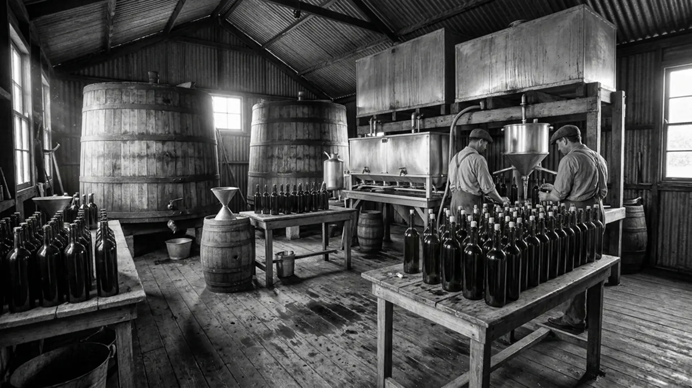

Una industria de escala mundial con raíz familiar.
Más de 50 años transformando materias primas en alimentos que nutren familias, controlando cada paso del proceso.
De la reventa al refinado propio.
Oligra nació como una empresa familiar dedicada a la comercialización mayorista de aceites vegetales en el Gran Buenos Aires. Con el tiempo, la visión de sus fundadores llevó a dar el salto hacia la producción propia.
Hoy contamos con una planta de refinación en Florencio Varela de 30.000 m², fabricación de envases propios y capacidad de envasado en más de diez formatos. Somos cuatro generaciones apostando al mismo proyecto.
Ver procesos →
Cincuenta años de crecimiento sostenido.
Fundación
Inicio de la actividad familiar en Quilmes con la reventa de aceites vegetales al por mayor.
Marca propia
Desarrollo de la primera marca de envase propio y expansión de la red de distribución nacional.
Planta propia
Adquisición y habilitación de la planta industrial de 30.000 m² en Florencio Varela, Buenos Aires.
Exportación
Primer despacho de exportación. Hoy con presencia en más de 25 mercados internacionales.
Refinación integrada
Refinado propio, packaging propio y múltiples líneas de producción con capacidad exportadora.
La visión que lo inició todo.
Fue el primero en ver lo que podía llegar a ser una pequeña operación de reventa de aceites en Quilmes. Con determinación y trabajo, sentó las bases de lo que hoy es Oligra Sudamericana: una empresa familiar de escala industrial con presencia en más de 25 países.
Su legado no es solo la empresa que construyó, sino la cultura que nos dejó: trabajar con integridad, apostar siempre al largo plazo y no conformarse con menos de la excelencia.
Misión
Del campo al consumidor, controlando cada paso.
Existimos para demostrar que una empresa nacida del trabajo familiar puede ser, al mismo tiempo, una industria de clase mundial. Producimos aceites vegetales de alta calidad integrando refinación, fabricación de envases propios y envasado en más de diez formatos, con alcance local y exportador.
Visión
Ser la empresa de aceites más confiable del mercado.
Transformamos materias primas en alimentos que nutren familias, controlando cada paso del proceso. Queremos ser reconocidos como la empresa de aceites vegetales más confiable y eficiente de Argentina, con presencia sostenida en los mercados internacionales más exigentes.
Valores que sostienen cada decisión.
Raíz familiar
Decisiones pensadas para la próxima generación, no para el próximo trimestre.
Integración industrial
Control de cada eslabón de la cadena: calidad, costo y tiempo de entrega.
Excelencia operativa
Mejora continua como hábito de trabajo diario, no como campaña esporádica.
Integridad comercial
La palabra empeñada vale tanto como el contrato firmado.
Vocación exportadora
Cada contenedor que sale representa lo que somos y lo que podemos dar al mundo.
Responsabilidad ambiental
Cuidar el entorno es una deuda de honor con quienes vienen después de nosotros.